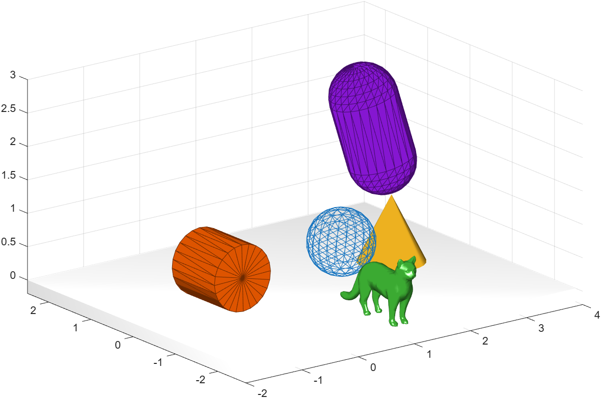

Giving a body its geometry, appearance and physical properties
A shape (Shape) determines how a body looks and how it
behaves in collisions. It is given either as a phx.shape.* object,
or in shorthand as a cell array {"Box", "Size", …}.
| Shape | Main options | Note |
|---|---|---|
| Box | Size [x y z] | Rectangular box. |
| Sphere / Globe | Diameter, Division |
Sphere (Globe has better texture mapping). |
| Cylinder | Diameter, Height,
Axis | Cylinder. |
| Cone | Diameter, Height,
Axis | Cone. |
| Capsule | Diameter, Height,
Axis | Cylinder with rounded caps. |
| STL / OBJ | Source, Scale,
Envelope | Import a model from a file. |
| Mesh | vertices / faces | Custom mesh with texture support. |
| Terrain,
Rock, Extrusion, Revolution |
height field / profile | Terrain, rock and profile-based shapes. |
Appearance is tuned with Color,
Style (smooth,
edged, wireframe,
flat), Material and
Texture:
clf; view(3); axis equal; grid on; camlight headlight; phx.Body("Position", [0.5 0 2], "Shape", {"Sphere", "Style", "wireframe"}); phx.Body("Position", [0 0 0.5], "Shape", {"Cylinder", "Axis", "y", "Style", "edged"}); phx.Body("Position", [2.5 0 0.5], "Shape", {"Cone", "Axis", "z"}); phx.Body("Position", [2.5 0 2], "Shape", {"Capsule", "Axis", "z"}); phx.Body("Position", [1 -1.8 1], "Shape", {"STL", "Source", "res/cat.stl", ... "Scale", 0.025, "Material", "shiny"});

phxex_shapes.phx.Body is the most important object. Its properties can be both read and written — even during the simulation (they read/write the engine directly).
| Property | Meaning |
|---|---|
| Position | Position [x y z] in global coordinates. |
| Orientation / EulerAngles / Quaternion | Body orientation (rotation matrix, Euler angles or quaternion). |
| LinearVelocity / AngularVelocity | Linear and angular velocity. |
| Type | "dynamic" · "static"
· "kinematic". |
| Mass | Mass [kg]. Can also be derived from the shape density
(Density). |
| Friction | Friction coefficients [slide · roll · spin]. |
| TotalForce / TotalTorque / Energy | Current force, torque and kinetic energy (read-only). |
A body can also be acted on directly with a force or a torque:
body.applyForce([0 0 50]); % a 50 N force along +z body.applyTorque([0 0 60]); % a torque about the z axis body.LinearVelocity = [2 0 0]; % set velocity at runtime
[0 0 -9.81] m/s². You change it when
creating the simulation: phx.Simulation("Gravity", [0 0 0]) for
weightlessness.